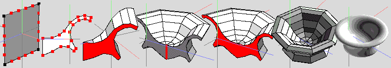

| Create and modify a 2D plane and extrude from this shape. 1). Create a 2D plane by extracting a face from a cube (say) and use cut (N) to add extra verts. Typical workflow: Create cube, select desired face and apply Face | Extract -> Normal (drag extracted face away from cube or hold shift to keep at the same position) Hide cube (click 'eye' icon on listing in Window | Geometry Graph) or delete (select cube: object mode) and delete (if required). Select extracted face, press E (to change to edge mode) and press 5 to cut all four edges into 5 equal parts) You now have a raw 'canvas' with 20 verts (Another way (of many) of producing this 'canvas' is to create a default cone, select apex and collapse it - result being a 'circle' with 16 verts - or click on square option box next to cone and enter an appropriate number. You'd have to View -> Y in this case, to use Tweak in a sensible manner) 2). View along an axis (X here) in ortho mode. Use Tools | Tweak to move the verts around to define ('draw') the desired profile, adding (or removing) verts as necessary. (Select edge and Edge | Cut -> N to add, select edge and Edge | Dissolve (or select vert and collapse) to delete verts) Using Tweak whilst viewing along an axis ensures that operations are constrained to a 2D plane. 3). Select a face and use Face | Extrude Normal (or Face | Extrude X here) to the required thickness. 4-6) Further modifications to the basic extruded object (to create a more complex one) can also be carried out, if required |
| Making 3D objects from 2D shapes |
| Create and modify a 2D plane and make a lathed object with a hole through its centre. 1). Create a 2D profile (as before) and place its 'lathing edge' the required distance away from a reference edge / axis. (Create a temporary object (cube, say)for this purpose if nothing suitable already exists) Ensure that the reference axis and the profile lie on the same plane and that the reference axis is correctly aligned with the profile - otherwise a different object from that required will result. 2). Select the upper face (of profile) and extrude normal 0.0 (zero units) (use shift to constrain or tab entry) 3). With top face of extrusion selected, invoke Face | Rotate (Use RMB option - Pick axis to rotate around). Click on the reference axis edge with RMB to select this edge and execute the rotate op. 4). Drag the mouse to form a 'wedge' of the required angle. Here, 30 deg was used. Constrain the drag by using shift. 5). Mirror the wedge formed in (4) until more than 180 deg object is formed. (3 mirror ops here ->240 deg) 6). After (5) there are several options to complete the object - loopcutting off the last 2 sectors (ending up with a 180 deg) selecting both end faces and mirroring about these might seem the most logical - but it creates extra (unwanted) internal geometry. Do a smooth op. and check. Here, I mirrored about the end face of the 240 deg wedge in (5), resulting in a 480 deg object (6) which looks correct - but isn't. Selecting the edgeloop shown (6) will let us remove the unwanted portion. 7). Apply loopcut - unwanted (and hidden) geometry now shows as selected. 8-10) Delete unwanted geometry, select both end faces and use Face | Bridge, resulting in the finished object. Doing a quick 'test' smooth, and viewing the object in wireframe can save much time / hair pulling later :) Experiment with different rotation amounts - eg a 40 deg (9 segment) object needs just 3 mirror + bridge. I used the above amount (30 deg) as it highlights important issues of general interest (imo). Changes due to new Wings releases (and a bit of re-thinking :)) Do stages 1-4 as above, then: Select both sides of the wedge shown in fig 4 and apply Face | Mirror. You will then end up with a 90deg 'chunk'. Select one end face and mirror to form a 180 deg semicircular object. Select one end face to form a complete (but still unfinished) object. Select whole object and apply Object | Weld - this will complete the procedure by welding the 2 end faces (opposite end from mirror face) together - verts will remain selected to indicate that this weld op worked ok. weld (Do a trial smooth to check what happens if you don't do the weld op :) ) |
| Create and modify a 2D plane and make a solid lathed object from this shape. 1). Create a 2D plane and introduce extra verts (as in previous example) 2). Form the desired cross section. 3). Select a face (on the profile) and invoke Face | Lift, using the appropriate edge as the 'hinge' edge for the Lift op. (This edge will become the main (central) axis of the eventual cylindrical object) Apply lift (use constraints / tab input) for the correct amount, dependant on the final number of segments required. This example used 45deg, but any sensible number can be used. 4). Mirror this first segment, then repeat mirror on the 90 deg segment to get a semicircular object. Select the central edge on the objects main 'lathing' axis and dissolve this edge. 5). Select the now 'clean' face and mirror the object to achieve the final result 6-7). Complete object, before and after smoothing |
| There
are currently 2 main methods of creating / 'drawing' a 2D profile or
'shape' that can be used as the basis for making 3D objects in Wings. For complex (and precise, maybe interlocking?) profiles, the better way (imo) is to use the Adobe Illustrator import option. Here, shapes can be created using the many tools available in AI (or based on scanned ref. images brought into AI). Once finished in AI, the file is imported into Wings (smoothing options available) and arrives as a 0.20 WU (Wings Unit) thick extrusion that can be manipulated in the same way as if it had been originally created in Wings. Illustrator itself isn't required - any programme capable of exporting .ai files (version 8 or earlier) will be suitable. (I've also used Paths (in Photoshop) for this job, after importing a scanned reference image into PS) (Note that all paths / profiles drawn must be closed ones - open ones are not supported by the .ai facility? If lines drawings with cross-sections are available, a series of these can be produced and imported into Wings. After arranging these (extrusions) in the correct order, they can be bridged together to form a 3D object. Unwanted edges will have to be removed (and Cleanup after) and the cross-sections will have to have the same number of edges - but the system does work and has uses for certain categories of objects. (Can also use cross sections / lines drawings on Image Planes as references for 'standard' modelling of course :) ) The text import facility offers another option if the user has access to font creation / manipulation software. Here, a whole 'library' (or typeface?) of custom shapes could be created and called up at the press of a key. However, the second method, described below can also provide good results (imo) and has the advantage of being completely contained within Wings itself. |
|  |
| Create and modify a 2D plane to derive a shape and extrude from this shape. |
 |
| Using a grid as part of a lathing procedure (part 1) |
| Sometimes it might be useful to use a grid as part of the lathing workflow. 1). Create a standard grid. 2). View Y, ortho and use Tweak to move verts around until you have the required profile (shown selected) Use cut / collapse to add / remove verts as necessary. 3). Select all edges enclosed by the profile. (or select faces and dissolve) 4). Dissolve edges selected in (3) 5). Select the profile face and apply Face | Extract -> 0 (zero). This makes a copy of the profile face and leaves it on the same plane as the original (grid) surface. 6). Keeping the selection from (5), apply Face | Extrude -> 0 (zero). This creates a zero thickness extrusion of the profile. To form the first 'wedge' section upon which the final object will be based, the top face of this zero thickness 'wedge' has to be rotated. 7). Apply Face | Rotate (Use RMB - Pick axis to rotate around) . Select a suitable edge for the main axis of the object being formed (shown in blue) and drag to start creating the wedge. I made a 30deg wedge, constraining with shift. |
| 8). Shows the 30 deg wedge upon completion. 9). As (8) but I've hidden the grid, as it's no longer required. Select both end (profile) faces of the wedge. 10). Apply Face | Mirror to the wedge - this will result in a 90 deg chunk. Select one end face. 11). Mirror 90 deg section to form a 180 deg semicircular piece - select one end face. 12). After applying Face | Mirror to the 180 deg section to form a 360 deg object, select the object and apply Object | Weld. This pic shows the verts selected after the weld op. 13). Finished object 14). After a smooth. If you have any doubts about the integrity of the object at any stage of the procedure, do a trial smooth and (also) view in wireframe mode. Flaws / anomolies will become readily apparent. The addition of Object | Weld and Face | Mirror (RMB - separate dupe) commands has added even more possibilities for workarounds of the type shown here. Beware of certain types of shapes / objects that have 'holes' in them and therefore won't let you select a single mirror face - these will probably need special attention. bridgeweld |
| Create and modify a 2D plane and make a solid lathed object from this shape. |
| Create and modify a 2D plane and make a lathed object with a hole through its centre. (2) |
| Using a grid as part of a lathing procedure (part 2) |
| 1). First, we need a blank 'canvas' to produce the required profile. Here, I've decided to use a cone (for a change). Create default cone, select apex vert and apply Edge | Collapse - if you think you'll need more than 16 verts / edges to define your profile, you could click on the small square box next to cone and enter the appropriate number. 2). If you want the main axis of the finished object to be parallel to X or Z, do this - otherwise ignore. Select a vert as shown (could also be on X axis) and apply Edge | Collapse - the new edge created will become the axis of rotation for the finished object - do not adjust either of the 2 verts associated with this edge or you will mess things up and you will not get the shape you want. 3). View -> Y (Ortho mode), use Tweak (or Move commands) as desired to produce the required profile - bearing in mind that the diameter of the hole through the centre of the finished object is determined by the distance of geometry from the reference edge made in (2) - the lowest (horizontal) edge shown here. 4). Select the top face of the finished profile, apply Face | Lift (LMB option) and choose the 'axis' edge as the 'lift hinge'. Executing the Lift command will now produce a wedge - drag to a sensible amount (using constraints) based on the number of sections needed on the final object. (I chose 30 deg and used shift to constrain) 5). Since we're trying to produce an object with a hole - we have to remove the appropriate part of the 'wedge' before continuing. Select the verts and connect (top) then select the edgeloop formed by these new edges (lower). Apply Edge | Loopcut. 6). Wedge after applying loopcut and removing the unwanted part of the wedge. Select both main faces of the wedge (underside not visible here) 7). Apply Face | Mirror (LMB) to form a 90 deg chunk 8). Repeat mirror procedure on a single face to get a semicircular portion. 9). Repeat (8) to form the whole object (use one mirror face only), select whole object and apply Object | Weld. (An alternative to 'cutting off' the centre bit (5) would be to leave it on, finish the object as if it didn't have a thro' hole (as first example) - then use Face | Bridge to make the thro' hole. Provided the geom was in the correct place - as it would have to be, anyway - select centre verts, both sides, press F to get all triangular faces, dissolve and bridge) The above (lift) method is a revised version of the following method. Whilst I consider the above simpler to implement, leaving the 'older' method will do no harm as it's up to the user to choose how they do stuff and it might be of use for other jobs where rotate using a remote ref is needed (say) :) |
| Create and modify a 2D plane and make a lathed object with a 'through' hole (1) |